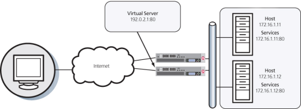

Updated Date: 07/07/2026
Introduction to Local Traffic Management
Central to the BIG-IP local traffic management system are virtual servers, nodes, and server pools. Virtual servers receive incoming traffic, perform basic destination IP address translation, and direct traffic to server nodes, which are grouped together in pools.

To configure a basic local traffic management system, you use the BIG-IP Configuration utility. With this utility, you can create a complete set of virtual servers, nodes, and server pools that work together to perform local traffic management. Each object has a set of configuration settings that you can use as is or change to suit your needs.
The BIG-IP Configuration utility includes a feature known as the Network Map. The Network Map provides a hierarchical, visual view of BIG-IP local traffic manager (LTM) components (virtual servers, pools, and pool members), their relationships, and respective statuses on the BIG-IP system. The Network Map also provides additional component information on accompanying panels on the page.
Step-by-step instructions for common tasks are available by clicking the Help (?) button in the upper-right corner of the network map:
- Sort by Status or Name
- Filter
- Filter – Advanced
- Sort by Partition
- View the details of a network object
- View advanced configuration details of a linked object in the Inspector
- View Network Statistics or a Map
- Refresh the Network Map
You perform this task to view the hierarchical relationship of local traffic objects to each virtual server on the BIG-IP system.
- On the Main tab, click Local Traffic > Network Map.
The Network Map opens in a new browser tab.
Note: The Network Map page does not refresh automatically; refresh the web browser you are using to get the most up-to-date Network Map data.